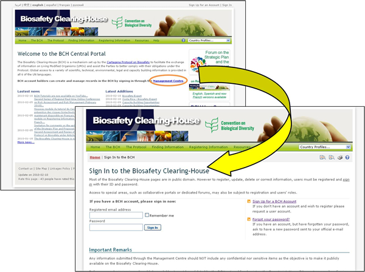

Inmediatamente debajo del párrafo introductorio al CIISB, se encuentra un enlace al Centro de Gestión, el cual es una página de entrada para aquellos usuarios que poseen una cuenta en el CIISB para crear y gestionar los registros que se encuentran en el CIISB.
El Módulo 06 proporciona una guía detallada sobre la manera de registrar información en el CIISB.

Figura 2
 Vea también
Vea también
MO 6 Registro de Información en el Portal Central del CIISB
Registro de Información en el Portal Central del CIISB